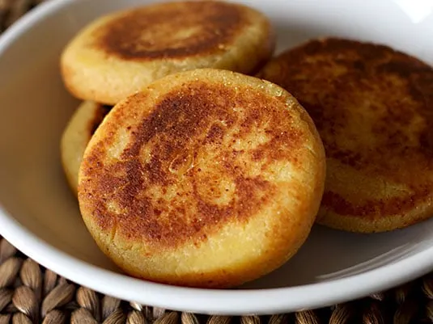
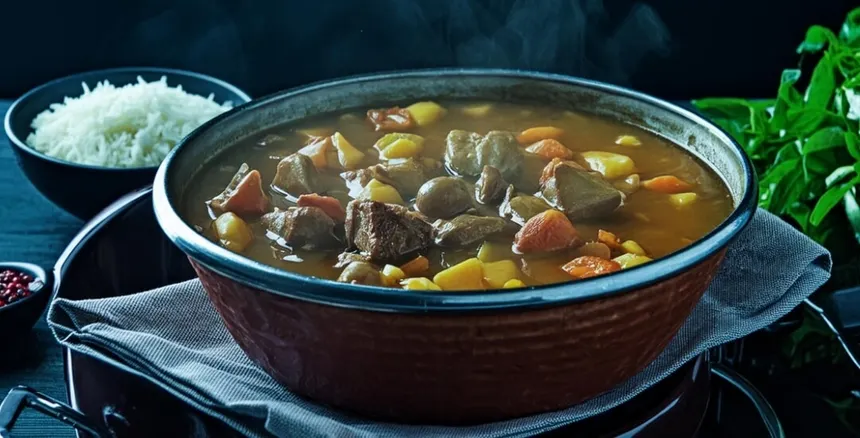
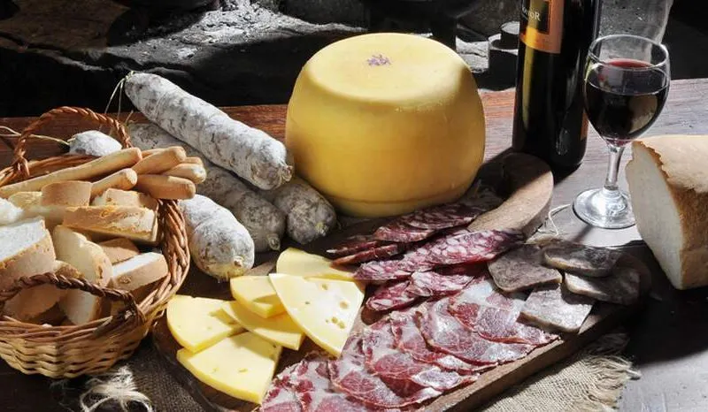
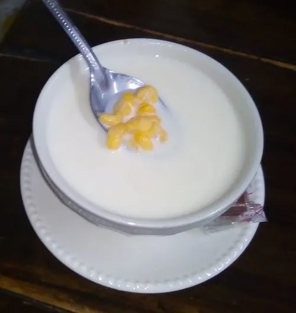

Arepa Boyacense
Arepa elaborada con maíz molido, leche y queso cuajada, ideal para acompañar con chocolate caliente o aguapanela.
Ingredientes:
- Maíz molido
- Leche
- Queso cuajada
- Sal

Cocido Boyacense
Plato tradicional con gallina criolla, papa sabanera, ibias, tocino y verduras, cocinado lentamente para un sabor único.
Ingredientes:
- Gallina criolla
- Papa sabanera
- Ibias
- Tocino
- Verduras variadas

Picada con morcilla y longaniza
Picada tradicional con morcilla, longaniza, papa criolla y ají casero, perfecta para compartir.
Ingredientes:
- Morcilla
- Longaniza
- Papa criolla
- Ají casero

Mazamorra Dulce
Sopa dulce hecha a base de panela, harina de trigo y chicha, acompañada con queso y amasijos típicos.
Ingredientes:
- Panela
- Harina de trigo
- Chicha
- Queso